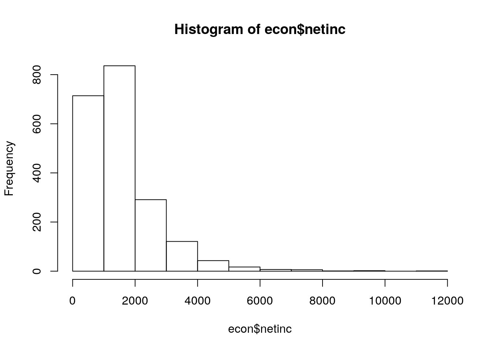

# Laden des Datensatzes
library(readstata13)
#Daten als Objekt importieren
SOEP <- read.dta13(file="data/offline/soep/new8.dta" ,
convert.factors=F,
nonint.factors = F)!! Marcel here: not sure if we should stick with car::recode. I personally don’t like it and prefer classic R with [], but its so much more code-intensive…
library(car)
# Variable Alter generieren
SOEP$alter = 2003 - SOEP$gebjahr
SOEP$alter [SOEP$alter == 2004] <- NA # entfernen der fehlerhaften
#sex
SOEP$sex <- factor(SOEP$sex,levels = c(1,2),labels = c("männlich","weiblich"))
# Ueberstunden recodieren 0=nein, 1=ja
SOEP$over = recode(SOEP$tp72,"2=0;-2=NA;-1=NA; 3=NA")
# Vertragliche und tatsaechliche Wochenarbeitszeit
# Missings bereinigen
SOEP$contract = recode(SOEP$tp7001,"-3=NA;-2=NA;-1=NA")
SOEP$actual = recode(SOEP$tp7003,"-3=NA;-2=NA;-1=NA")
SOEP$contract = SOEP$contract/10
SOEP$actual = SOEP$actual/10
# Vertrauen
# "Trust in people" und "Can't rely on anybody" recodieren
SOEP$trust = recode(SOEP$tp0301,"-1=NA")
SOEP$rely = recode(SOEP$tp0302,"-1=NA")
SOEP$netinc = recode(SOEP$tp7602,"-3=NA;-2=NA;-1=NA")
# Nur relevante Variablen werden übernommen
SOEP_data <- SOEP[,c("netinc","alter","sex","contract","actual","trust","rely")]
head(SOEP_data)## netinc alter sex contract actual trust rely
## 1 NA 52 weiblich 37.0 37.0 3 2
## 2 NA NA männlich NA NA NA NA
## 3 800 55 weiblich 38.5 41.5 2 3
## 4 NA 25 männlich NA NA 2 3
## 5 3600 57 männlich 40.0 42.0 2 4
## 6 NA 81 männlich NA NA NA NA# Delete NAs
SOEP_data <- na.omit(SOEP_data)
# Einkommen Kategorisiert in Quartile
hist(SOEP$netinc)
quantile(SOEP_data$netinc)## 0% 25% 50% 75% 100%
## 0.0 810.0 1359.5 1900.0 10388.0SOEP_data$inc_kat <- NA
SOEP_data$inc_kat [SOEP_data$netinc < quantile(SOEP_data$netinc)[2]] <- "Q1"
SOEP_data$inc_kat [SOEP_data$netinc >= quantile(SOEP_data$netinc)[2] & SOEP_data$netinc < quantile(SOEP_data$netinc)[3]] <- "Q2"
SOEP_data$inc_kat [SOEP_data$netinc >= quantile(SOEP_data$netinc)[3] & SOEP_data$netinc < quantile(SOEP_data$netinc)[4]] <- "Q3"
SOEP_data$inc_kat [SOEP_data$netinc >= quantile(SOEP_data$netinc)[4] ] <- "Q4"
table(SOEP_data$inc_kat)##
## Q1 Q2 Q3 Q4
## 1224 1231 1180 1275last thing to do. advanced tidyverse